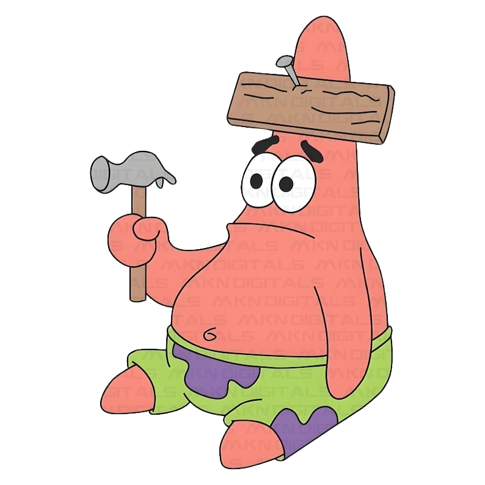

<ion-content [fullscreen]="true"  class="background">

	<h1>404 not found</h1>
	<div class="mensaje">
		<h4>Parece que la página que buscas no existe.</h4>
		<p>Por favor, comprueba la dirección o vuelve al inicio.</p>
		<br>
	</div>
	<div class="contenedor">
		
	</div>
	<div>
		<br><br><br><br><br><br>
		<ion-button expand="block" (click)="splash()">Volver al inicio</ion-button>
	</div>

</ion-content>